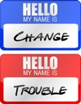

11 cosas sobre DevOps (2): En qué difiere de Agile
Ya está aquí la segunda entrega de las 11 cosas que necesitas saber sobre DevOps, por Gene Kim. En esta ocasión, se comenta sobre la relación con las metodologías ágiles, y sus efectos en los ciclos de desarrollo de aplicaciones. En este apartado, explica cómo la aplicación de las metodologías ágiles ayudan a la aparición de gran parte del movimiento DevOps, explicando cómo se relacionan y qué aportan al negocio. Como ya se indicó la semana pasada, creemos que es una buena excusa para iniciar un debate en Twitter con el hashtag #11cosasdevops.
2. ¿Cómo difiere DevOps de Agile?
Uno de los principios del proceso de desarrollo ágil es entregar software funcional en entregas más pequeñas y más frecuentes, como punto de vista opuesto al acercamiento "Big Bang" de la metodología tradicional en cascada. Esto es muy evidente en la meta de las metodologías ágiles de tener funcionalidades nuevas, potencialmente entregables, al final de cada sprint, es decir, típicamente cada dos semanas.
El alto ratio de entregables para desplegar suele apilarse en la puerta del equipo de operaciones de IT. Se atribuye a Clyde Logue, fundador de StreamStep, la frase 'Agile fue el instrumento que permitió a Desarrollo reconquistar la confianza del negocio, pero, sin querer, dejó a Operaciones atrás. DevOps es el instrumento para que el negocio recupere la confianza en el equipo IT por completo'.
DevOps es especialmente complementario al proceso ágil de desarrollo de software, dado que lo extiende y completa la integración contínua y el proceso de lanzamiento, asegurando que el código está listo para producción y proveyendo valor al cliente.
DevOps permite un flujo de trabajo mucho más contínuo dentro del equipo de operaciones IT. Cuando el código no se promueve hasta estar en producción, al ritmo al que es desarrollado, los despliegues se apilan frente a la puerta de operaciones, los clientes no reciben el valor en el que se ha invertido y los despliegues a menudo resultan en caos e interrupciones de servicio.
DevOps tiene un componente inherente de cambio cultural, dado que modifica el flujo de trabajo y las medidas locales de Desarrollo y Operaciones IT. John Willis y Damon Edwards escribieron extensivamente sobre esto.